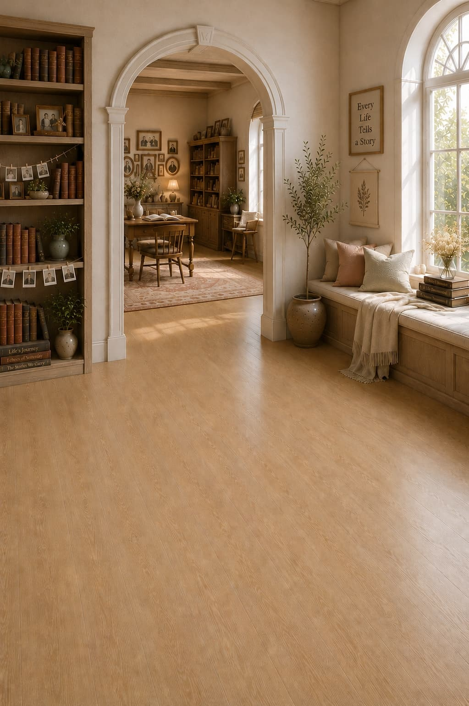

The story you are
still writing.
A wing for the autobiographical self — names, words, memory, identity, the long arc of a life. The library is gathering the tools for tending your own story.
Books, tools and experiences for the story of a life are being prepared. The wing is being built quietly. Return again — there will be more to find.